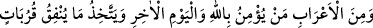
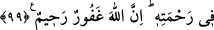

kimse infak ediyorsa, bunu ancak gösteriş ya da takiyye için yapar.
“ve sizin başınıza belalar” musîbetler ve âfetler “gelmesini bekler.” Münâfıkların,
bekledikleri belâlardan maksad, Rasûl’ün (s.a.) ölmesiyle müslümanların devletinin
yıkılması, kâfirlerin onlara üstün gelmesi gibi musîbetlerdir. Bunu bekliyorlardı ki bu
sayede mallarını tasadduk etmekten kurtulabilsinler.
Bu Fakir (Bursevî) der ki: Bu tür nifak bugün de mevcuddur. Görmüyor musun
müslüman ismini almış bazı insanlar, infaktan ve sultanın koyduğu vergilerden (tekâlîf-i
sultâniyye) kurtulabilmek için nasıl da kâfirlerin gâlip gelmesini arzuluyorlar. Bu
yüzden de ancak kerhen tasaddukta bulunuyorlar. Allah böylelerini de, bizi de nefis ve
şeytanın tuzağından kurtarsın! Onları ve bizi hakîkî imana sahip olanlardan eylesin!
Bekledikleri “O kötü bela onların başına gelsin.” Yaptıkları kötülükler başlarına
geri dönsün. Bu, münâfıkların müminler için arzu ettikleri şeyin benzeri ile onlara
yapılan bir bedduâdır.
“Allah” onların infak anında söyledikleri hayırsız sözleri “pek iyi işiten,”
münâfıkların, başınıza belaların gelmesini beklemeleri de dahil içlerinde gizledikleri
fâsid şeyleri “çok iyi bilendir.”
99. Bedevîlerden kimi de var ki Allah’a ve âhiret gününe inanır, verdiğini Allah
katında yakın dereceler kazanmaya ve Rasûl’ün duâlarını almaya vesile sayar. İyi
bilin ki o, (verdikleri) kendileri için yakın dereceler(e vesile)dir. Allah onları
rahmetinin içine koyacaktır. Muhakkak ki Allah bağışlayandır, esirgeyendir.
“Bedevîlerden” el-İrşâd’da zikredildiğine göre: “Mutlak olarak Bedevî cinsinden”,
et-Tibyân’da belirtildiğine göre ise: “Esed, Cüheyne, Gıfâr ve Eslem bedevîlerinden”
“kimi de var ki Allah’a ve âhiret gününe inanır”
er-Ravda adlı eserde kaydedildiğine göre bedevîlerden birisi: “Bedevîler, kâfirlik ve
münafıklık bakımından daha beterdir…” âyetini duyunca ruhu daraldı. Sonra:
“Bedevîlerden kimi de var ki Allah’a ve âhiret gününe inanır...” âyetini işitince:
“Allahu ekber! Allah bizi önce yerdi, ardından da övdü.” demiştir.
“verdiğini” Allah yolunda infak ettiği şeyleri “Allah katında yakın dereceler
kazanmaya” sebep ve vesile sayar.
Haddâdî bu ifâdeleri tefsir ederken der ki: Cihad yolunda sarfettiği nafakasını, Allah
katında makam ve sevap elde etmek için Allah Teâlâ’ya bir yakınlık vesilesi sayar. Bu
âyette, bütün yakınlık türleri ya da şekilleri dikkate alınarak “
” kelimesi çoğul